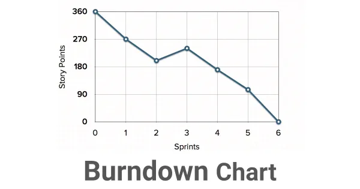

Scrum se basa en ciclos de trabajo llamados sprints que duran de 1 a 4 semanas. Cada sprint se compone de diferentes fases: planificación, ejecución, revisión y retrospectiva. Estas fases se repiten a lo largo del tiempo y permiten mejorar el trabajo del equipo.
Se decide el objetivo del sprint y se planifican las tareas necesarias para alcanzarlo.
El equipo trabaja en el sprint y se coordina diariamente en reuniones cortas llamadas daily scrum para identificar obstáculos y buscar soluciones.
Se revisa el trabajo hecho durante el sprint y se ajusta el plan para el siguiente.
El equipo reflexiona sobre el sprint y busca maneras de mejorar su trabajo y rendimiento.
Scrum se basa en roles bien definidos que trabajan juntos para lograr los objetivos del proyecto.
Representa al cliente y es responsable de definir las historias de usuario, priorizar el trabajo y comprobar que el producto cumpla los requisitos.
Actúa como facilitador del equipo scrum, eliminando obstáculos y asegurándose de que se sigan las reglas y procesos del marco de trabajo.
El equipo responsable de completar el trabajo, autoorganizado y multidisciplinario. El equipo estará formado por desarrolladores, diseñadores, especialistas en calidad, etc.
Los artefactos son documentos o informes colaborativos que ayudan a que el trabajo sea más transparente y entendible por todos.
Lista de los requerimientos del proyecto organizados por prioridad, se puede anadir en cualquier momento.
Tabla donde se muestra el trabajo del equipo, las tareas que se van completando en el sprint y la relacion que tienen con las metas de sprint.
Representacion grafica del trabajo restante para completar el sprint y si se cumple el objetivo que se establecio para el sprint.
Scrum cuenta con diferentes eventos que ayudan a planificar y seguir el progreso del proyecto.
Reunion donde se planifica el trabajo que se puede completar en el sprint.
Reunion diaria de 15 minutos donde el equipo revisa el trabajo pasado, presente y futuro para coordinar el trabajo diario y avanzar en el sprint.
Reunion para revisar del objetivo establecido del sprint, mostrar el trabajo realizado y analizar las mejoras y retroalimentacion de los interesados.
Revision del proceso de trabajo del equipo para mejorar el proceso con el tiempo.
Scrum está diseñado para mejorar la productividad y eficiencia del equipo a través de una comunicación clara, una planificación transparente y una colaboración efectiva.
Pequeños logros continuos y entrega constante.
Comunicación fluida, trabajo en equipo y autoorganización.
Transparencia sobre lo que se está trabajando y entregando.
Nicolás Sequeira - Shirley Lavallén - Sebastián Rosano - Karen Ferreira - Joaquin Fernández - Sol González
Grupo 5 / Desarrollo Web Grupo 267 / Jóvenes a Programar - Fase 2